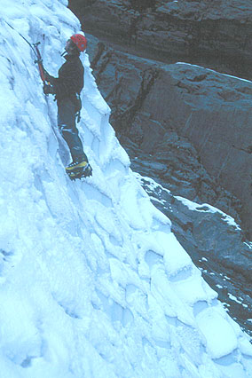
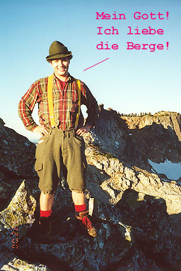
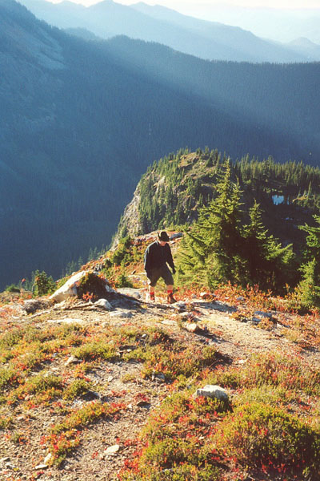
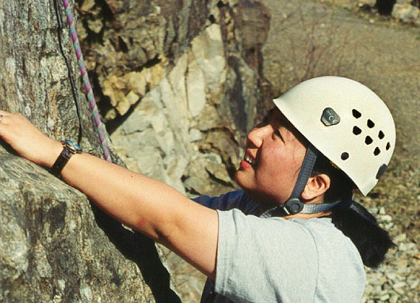
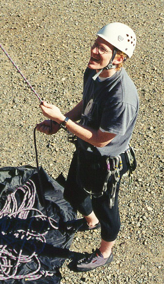
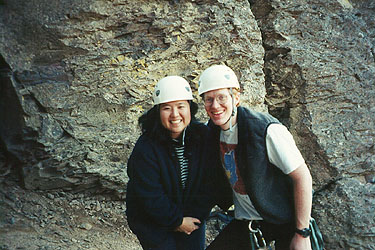

Short Reports 2000
Mount Dickerman (partial), 12/26/2000
Is it unusual to be able to drive to the trail-head after Christmas? The trail is free of snow, but a little icy for much of the way in the forest. Snowshoes aren’t needed until the long traverse on steeper slopes just above 4000 feet. Views of Vesper Peak, Sperry Peak, Big Four and Hall Peak were excellent. The trail ended, and I blazed to about 4400 feet. I turned around there because I had to be home by one, I somehow thought the summit was 6500 feet (demoralizing), and I had no idea I was just below appealing, gentler slopes! Lesson - don’t forget the map! It was a peaceful morning in the mountains, with some weak yellow sun.
Urban hike - Costco to home, 12/17/2000
I had really wanted to do some hiking this weekend, so I was bummed to be hanging around the Kirkland “Costco” store amid the milling consumers. Kris and Marco left me there with a map at 4:00 pm. I had a pretty enjoyable walk home, a total distance of 10 miles. I took a route over some hills, passing a cider farm where I enjoyed fresh apple cider and petted some dogs. I passed a local pizza business that wouldn’t sell me a slice. I was home in just under 3 hours. Different, but still rewarding.
Lake Serene, 12/12/2000
I took a pre-work jaunt up to this cold sub-alpine basin. The trail is easy to follow all the way to the lake, despite some dry, fluffy snow on the upper staircases. I have to admit, I like the stairs! It was a beautiful morning to watch the sun turn Mt. Persis gold, and see burning orange cloud wisps and blue sky over Mt. Index. The lake is frozen. I would almost try walking on it, but I have a healthy sense of self-preservation. It’s amazing that the elevation is only 2700 feet. Bridel Veil Falls is festooned with icicles.
Steven’s Pass Skiing, 12/??/2000
Shari, Roland, Kris, Marco and I went for a few hours of skiing. Shari got an injury, but she’s ok now.
Mt. Townsend, 12/02/2000
Jake and Peter met me at the Edmonds ferry, which I barely jumped onto before it left, and we met Greg before entering the maze of forest roads east of the Buckhorn Wilderness. We got a bit lost, then had a flat tire to repair. Jake thumbed through the guidebook describing our proposed Tunnel Creek hike, and espied a trail up Mt. Townsend. This had to be better! We agreed to head up there, and spent more time on the confusing roads. We hit snow in the last mile. One more storm and it won’t be possible to drive to the trail-head! The hiking was fun in crunchy snow and clearing skies. I would meander ahead now and then to get some “cardio” training. We were a happy bunch to be under a blue sky looking up at our peak. The trail wound up an avalanche slope, completely safe with such low snow cover. Finally we went straight for a saddle below the summit, getting some nice views of the Graywolf range. After a visit to the summit and some stories, we continued telling tall (but true!) tales over lunch at the saddle. We pored over Greg’s map, naming summits and valleys for an hour before heading down. The clouds had started to obscure views, and we were soon in a fog. An uneventful descent, except for the time Peter and I cut a switchback down a steep snowy slope only to end up in a tight ravine far from the trail. Oops! At least we got to use our snowshoes traversing over to Greg and Jake, who waited for us. We took our evening repast at the Whistling Oyster, a most excellent tavern for the weary.
Barclay Lake, 11/19/2000
Kris and I were coming back from a weekend cabin near Lake Wenatchee, and I wanted to see the North Face of Mt. Baring again. We started walking on the gentle, but icy trail to Barclay Lake. Kris was really cold, and nervous about the ice. I sent her back and quickly jogged to the lake and back. The face was a weeping cascade of ice lower, and dark black rock above.
Big Four Ice Caves, 11/10/2000
Peter and I met John B. and Wendy at the caves on a beautiful Saturday morning. There was a dusting of snow on the ground. We set a top rope on a short wall of overhanging ice. John, Peter and I climbed the 15 foot wall several times, very happy to have helmets and goggles for the occasions when the ice tools came out of the ice suddenly and unexpectedly! John and Wendy had to go, so Peter and I climbed 400 feet up to the Bergshrund at the back of the caves. Here, Peter set a top rope above a 70 degree ice/snow slope. This was a blast, the climbing was easy but thrilling. We were running late for our afternoon appointments, so we hurried down before getting to really explore the many short climbs in this area.

Vantage with Kris 10/15/2000
Kris and I hadn’t climbed together in quite a while, and we missed that a lot. So a trip to Frenchmen’s Coulee was called for. We did several easier climbs at the Feathers (old favorites), then headed to the Sunshine Wall. There, I climbed “Party in your Pants” (5.8, trad), a classic crack route. This climb was pretty long, I had to rest on the rope a few times to finish it. But the jamming was very straightforward and enjoyable.
Snoqualmie Peak (almost), 9/22/2000
Peter and I planned an early morning climb of Lundin Peak’s West Ridge, which should be an excellent 4th class scramble. He picked me up at 3 am, and by 4:30 am we were thrashing in brush near the Snow Lakes Trailhead. After 30 minutes of Devil’s Club, we pulled out the route description again. The trail up to Snoqualmie Peak started 50 feet to the right of the Trail-head! We found it quickly, and tried to make up for lost time. It started to lighten as we crossed Cave Ridge, coming to a saddle between the ridge and Snoqualmie Peak. We decided to climb high on this peak, then traverse right to the base of Lundin. No sooner did we begin scrambling up talus and heather, than we realized our firm turn-around time prevented us from making the climb. We had to be back in the city by 11 am. So we climbed “The Snow Dome” to the right of Snoqualmie Peak. Peter insisted it was the summit, but deep in our hearts we knew it wasn’t. Clear skies and a bitterly cold wind accompanied us down the ridge. We found that a trail goes down from the Cave Ridge/Snoqualmie Saddle, but worried about where it went. Later, I found that it met up with the steep trail we took up from the trail-head. So we traversed Cave Ridge, then headed down. We met a woman who couldn’t believe what we’d done, and then she determined that we climbed the Snow Dome rather than Snoqualmie Peak. “Oh, of course, see, I knew you couldn’t climb Snoqualmie! That took me all day long!!”. To us, it seemed that since the Snow Dome was about the same height, and if we hadn’t lost 45 minutes looking for the trail, we could have done it. Nursing our bruised egos, we tore down to the car, and to work. At least we know something about those elusive trails up from Alpental now!


Vantage, 09/03/2000
Sunday, I took my dad and Kitty to Vantage for some rock climbing. He did very well, climbing Where the Sidewalk Ends, and The Becky Route. I climbed a 5.10a on the other side of the Feathers, and a favorite: Jesus Saves.
Leavenworth, 08/28-29/2000
I took Marco climbing in Leavenworth. First we did 3 or 4 fun pitches on Mountaineer’s Dome. But I dropped his camera on the second pitch. We watched it explode on the rocks on a long downward course! I felt terrible, but did buy him a new one. Then we climbed the 5.7 top-rope on Barney’s Rubble, and finished the day with a supposed 5.6 crack to the left. I’d rate it 5.7 for sustained moves with a definite “protect or go on” quandary. We had dinner at a Bavarian Restaurant, where we met a couple from Germany. They were from an area very close to Marco’s island of Fuehr! And the food was “pretty good”, according to him…high praise from a real German! We bivied at the 8-mile campground, under beautiful stars. In the morning, I awoke to clear skies, but a barometer that had dropped rapidly. Doubtfully, I looked up at the sky again, which was suddenly filled with cloud!
But the weather was stable, so we climbed the R \& D Route. I think Marco is correct in feeling that I sandbagged him…it was too hard for a beginner. We did the climb in 4 pitches, and on each one Marco had a significant challenge. He always came through, but wasn’t entirely pleased. I did a lower for Marco, then rappelled. After some tricky hiking, we were back at the car and heading home. Marco was patient, a quick learner, and an excellent companion. Whether he’ll want to climb again is something only he knows! ;).
Rampart Lakes, 08/27/2000
Marco and I hiked up to Rampart Lakes, an area I’d wanted to visit for a while. The weather was overcast, with occasional sun breaks. It was Marco’s first mountain hike. He was zooming up the trail, but found it a little tiring upon realizing that it goes up for thousands of feet. Pacing, my boy! On the way down, we ran great distances, and I did a somersaults on the trail, escaping with a small cut on the knee. “You’re insane!” said Marco, as I began running again. I wonder.
Mount Si, 07/30/2000
I made it to the top of the Haystack in 1:30, and was at the base at just under 3 hours. I discovered a portion of the old trail in the final mile, and this was nice, because it goes up steeply, with no pesky switchbacks. Heart rate: 170 bpm most of the way.
Vantage, 07/29/2000
Kris and I climbed here with Peter and Kim, and it was a lot of fun, despite being very hot in the sun. We climbed many routes at the Feathers, where we had shade. Kris did The Beckey Route (5.7), I did a 5.10a sport climb there and a fun 5.8. After lunch we went to the Zig Zag Wall, and I led the gear route Jeff’s Crack (5.8). This was great fun. Peter led a trad, loose 5.7 route that Kim and I followed. As the sun went down, we headed over to the Sunshine Wall, where Kris climbed Peaceful Warrior (5.6), and Peter and Kim did the classic Clip ‘em or Skip ‘em (5.8). We got back to the car at full dark.
Leavenworth Climbing, 07/22/2000
This was supposed to be a climbing weekend, but our motivation was pretty low. All we did was go to one Dome where I led Jazzy Document (5.9), also led a part trad part bolted 5.9 nearby, and top-roped a 5.8+ just to the right. We had slept in until 2 pm, so of course we didn’t do anything else!
Index Climbing, 07/21/2000
Kris and I got up early for pre-work climb of Great Northern Slab. She did really well! I finally climbed something else at Index, with the 5.7 Sickle Crack. I’m really eying Libra Crack (5.8), which seems to be 3 pitches of crack and chimney climbing. Next time, I’ll do that!
McClellan Butte, 07/17/2000
After a long rest due to injury, and a business trip to Florida, I felt flabby and bewildered that I had missed more than a month of precious summer for climbing. I had to see how bad the damage was, so I took the afternoon to hike up McClellan Butte. I met many coming down, all of them warned me about the horrors I would face without bug spray. I did get about 15 bites, but this was only a small annoyance. The snow was interesting in my traction-less ancient tennis shoes. The final ridge scramble was really fun. The view was incredible. I really liked seeing that Chester Morris Lake too. I took 2:15 up and about 1:45 down. It was nice to finally hike this peak.
Leavenworth Climbing with Kris, 07/02/2000
We showed my parents around Leavenworth Saturday and Sunday, having a good time in the German restaurants with them. Tom sang some excellent beer songs, and Kris and I caught up on our “Chicken dance” practice over wurst. Sunday, Kris and I got in 2 pitches on Mountaineer’s Dome. We did “Left Crack” (5.6), and it was a lot of fun.
Horrible Forbidden Peak
Steve and I hiked into Boston Basin under blue skies, having a grand ol’ time. Mat, Jeff and Jake were scheduled to hike up the next morning. We camped at 6500 feet just below the Unnamed Glacier that starts the West Ridge route. We were at a cliff with some water. The weather deteriorated, beginning to snow. We slept in my clip flashlight tent. At midnight a huge ice block slammed into my back, knocking our tent off it’s platform, and leaving me full of adrenaline and hurt. Steve thought it was an avalanche. We know the block came from the glacier, but couldn’t believe it could come so far down. 2 other parties were camped nearby, we were just very unlucky. Steve took down the tent while I assessed my injuries. Back and ribs were stiff, but I could walk, and figured I’d better do that while I can. All night retreat in soaking rain. Drive sadly home. Mat, Jeff and Jake have wonderful climb. Still recovering. Sigh. But big thanks to Steve for doing his all to insure I was comfortable and safe on the way down. Thanks man!
Miserable Gunn Peak, 06/17/2000
I decided to climb Gunn Peak on this beautiful day, but what was I thinking? With high hopes, I hiked the incredibly overgrown road Beckey mentions. Soon, each step became an ordeal, as young, strong trees had grown up in the road very close together. I think I got to a point close to where Beckey says the “trail” begins: a non-existent parking area below a clear cut. Turning around was an agonizing decision, because I’d put 2 hours in just to this point, and trying to do something else that morning was shot. Finally, I did turn around, and a branch promptly poked out my left contact lens. It was my last pair, so now I don’t have contacts anymore. Disgusted, I finally arrived at the car. Thanks a lot green Beckey book!
Exit 38 Climbing, 04/02/2000
Bob Scoverski met Kris and I around 9:30 am (yes, we were late Bob!). Bob gave us the tour of this area on this beautiful morning. Kris climbed an unnamed route that was really fun, maybe 5.7. Bob led a great 5.9+ and I led a 5.8/5.9 to the left. Sadly, this area is so small that Kris didn’t get to climb anymore, as the easier climbs were gang top-roped and we couldn’t get in despite waiting quite a while. This rock is really strange, there are no cracks, and you really have to search for holds sometimes. Kris and I climbed that evening at Vertical World to make up for the crowds at Exit 38!


Index Climbing, 04/01/2000
I finally had my chance to take Kris to Great Northern Slab, an excellent beginner’s climb. Her abilities have improved remarkably in the past few weeks, and I felt she was ready. We arrived at 10 or 11, and immediately had problems with the “3rd class” chimney to get to the start of the climb. But a belay, a handhold, and advice from below helped. It was her first time to stick her foot in a crack and torque it! The first pitch was tons of fun. The second pitch was harder, and Kris used a variation around the start. She did awesome on the twin cracks above that, cleaning gear, smiling and climbing well! The last pitch was short, but enjoyable. We did a double rope rappel from there, another first for my adventurous wife. At the top of the first pitch, we ran into trouble when one of the ropes got stuck when we pulled it down. I climbed up and traversed over to get it, easily down-climbing. A final rap to the ground = the end!
Tiger Mountain, 03/31/2000
Kris needed to work later than me, so I had a few hours to kill (from 9:00 to midnight). Calling Phil Spory was just the ticket, as he could recommend a nice hike I could do in the dark with no flashlight: Tiger Mountain! His directions were good, and after 2 sweaty/chilly hours, I found myself on top at an unremarkable summit with a radio tower. Down about 1/2 mile from the summit was the best view, of city lights stretching to the horizon. Something dark and creepy scampered across the logging road, freezing my heart for a moment. I jogged all the way down, and was back to pick Kris up at midnight.
Camp Muir, 03/26/2000
Jake, Rob and I climbed to Camp Muir on this very sunny Sunday. The weather was too good, in fact, because I got a pretty bad sunburn. We all had sunscreen, but each bottle was almost empty, providing just a small amount for my consumption! Jake pointed out the Gibraltar Ledges route, and variations. We saw where an avalanche had swept the snowfield below the Kautz Ice Cliff. Late in the day, a large avalanche released on the Nisqually Glacier, sending a plume of powder over to the Muir Snowfield. I finished the hike in 4 hours, feeling the elevation in the last 1000 feet. Jake and Rob came up later, and we had lunch. Jake got some great turns on his randonee gear, making Rob and I jealous! This was a great introduction to Rainier, and I feel like I know the mountain a little better.
Vantage Climbing, 03/25/2000

Kris and I climbed at the Feathers all day, taking a nice break for a picnic at noon. She did really well, climbing several mid-5th class routes. Kris got additional rappelling practice in too. Finally, she led “Where the Sidewalk Ends” in great style!! I climbed a new (for me) 5.8 and 5.9 on the sunny side of the Feathers.
Vantage Climbing, 03/12/2000
The participants in this endeavor to see if it was too early for rock climbing at Vantage were Peter, Jake, John B. and I. We arrived at 10 am, discovering that conditions were perfect: just a little cold out of the sun, but very climbable. Not too windy, either. John B. got his first lead in at “Where the Sidewalk Ends (5.0)”, and followed on “The Beckey Route (5.7).” Jake did well in tennis shoes, even leading “Peaceful Warrior (5.6).” Peter led an excellent 5.8 sport climb at the feathers, and I lead a crack to the side. Jeses Saves (5.8) was a great nearby sport climb. Peter led “Seven Virgins and Mule,” a 5.7 excellent trad climb in a chimney. I finished the day by leading “Another Notch in my Lipstick Case,” a tough 5.7 trad climb. All this and more!
Skiing at Crystal, 02/19/2000
An excellent outing care of my workplace for a job well done. Most of our team went, and we skied and snowboarded all day long. It was a beautiful day, and for the first time, I got onto some pretty steep slopes. Little Shot and another blue run coming down from a 6400 foot pass were very challenging!
Solo climbing at Index Town Wall, 02/12/2000
I decided to climb the Great Northern Slab (yes, again!), but alone this time. By anchoring the rope at the base of each pitch, I was able to ascend quite safely, getting used to the awkward clove-hitch knot as a means of paying out line. I found an easier variation around the first steep part of the second pitch, and soon found myself up on the wall with a tremendous view. Wow! Rapping and re-climbing the second pitch was so much fun. I was whistling as I worked, and two fishermen from the river saw me and pointed. They stared as I bid farewell on the final rappel.
Steven’s Pass Skiing, 02/09/2000
Kris and I took the day off for some fun skiing with no lift-lines! It started out rough, with very icy snow. But the day warmed up, and we spent most of our time on the Brooks chair. I worked up my courage to try a steeper blue run on the east side of the basin. I made it down alive! Kris continued working on her parallel turns, having trouble turning left. We got pretty sore, and called it quits around 4 pm.
Mt. Persis Climb, 01/30/2000
I started walking up the snow-covered road at 6:30 (the snow added a mile to the journey), and finished with the roads an hour later, working up a steep clear-cut. Crampons sped me up a lot on the frozen snow. The route follow a long ridge and as the views got better, the wind began to howl! Pretty soon, it was blowing me over, and I had to crouch and brace against it. I was still 2000 feet below the summit and worried about what this kind of wind might mean up there. But I developed a strategy (head down, body crabbing sideways) to make it bearable. The snow deepened and I changed back to snowshoes, and soon came to the false summit at 5200 feet. Looking at the true summit so far away was disheartening, but the promised views of Index Peak pulled me on. Huge plumes of spindrift were spinning off the summit.
Down to a saddle and slowly up again, I encountered the coolest thing. The blowing wind and snow had scrubbed the slope, leaving elevated mounds in the shape of a snowshoe. Indeed, the compacted snow under the weight of a previous snowshoer had remained, while approx. one foot of snow all around had been removed from the slope. By walking on these elevated tracks, I didn’t sink at all! Awesome, menacing patterns of spindrift swirled in the corner of a basin I crossed. I wended my happy way through widely spaced snow-covered trees up to the summit. YES! The cliffs of Index Peak were frightening, and the town of Index and it’s walls were far below. Gunn Peak beckoned, and I could see Glacier, Three Fingers, Columbia, Baring, Garfield, Rainier (being engulfed by clouds), even Stuart. The wind died down, and I could hear a police siren down in Gold Bar! These were the final hours of a beautiful weather spell: already the Olympics were vanishing and high clouds were speeding up from the south.
I called Kris for a chat (excellent reception), and started down. The descend was quick, but I did take one wrong turn. The blowing snow had completely covered my tracks in a few places, and once I started down a ridge to the northwest, rather than west. Easily fixed though. On the north side of my ridge, I saw the exits of many ice-filled colouirs that looked perfect for winter ice climbs (when/if I’m ever ready for that!). Back on the road, the wind had died, but the blue sky had been replaced by gray. As I drove towards Gold Bar, the first patterns of rain fell on my windshield…
Steven’s Pass Skiing, 01/29/2000
This time, four intrepid souls got up real early to ski in the day here. This time Kris and I took a lesson together, and she zoomed down her first intermediate slopes beautifully! I learned some good stuff too. Kris is getting the parallel turn down, so watch out! Roland and Shari improved their snowboarding with a lesson. Together, we are getting pretty good! It was cold though, and the clouds never burned off.
Snoqualmie Summit Skiing, 01/20/2000
Kris got some new plastic tele boots, so we headed up after work for some night skiing. We went up and down the green run, fighting the extreme cold!
Steven’s Pass Skiing, 01/16/2000
Roland, Shari, Kris and I headed up for some night skiing. Kris took a lesson, and instantly became an incredible skier! She was showing me how to get down the steep parts! We can’t wait to go again. Roland and Shari had their new snowboards. This was a super-fun evening.
Index Climbing, 01/15/2000
Peter and I aid climbed the first part of a wide-crack climb called the Lizard. We got to place a lot of gear, so this was fun! Then Peter climbed the 5.0 first pitch of Great Northern Slab with a mixture of free and aid moves. We had an awesome view of Mt. Index as the early morning fog dissipated. There was snow on the ground in Index. We just had the morning, so reluctantly said goodbye at noon.
Kendall Knob Skiing, 01/07/2000
I just had a few hours to spare, so headed to the pass to scope out this favorite ski trail. It climbs a snow-covered road, switch-backing occasionally with ever-better views of the skiers across the valley along the lifts. I’d forgotten the duct-tape though, and a blister turned me around before reaching the Knob. Descent was trying, due to the many, many tracks of snowshoers, dogs, skiers, and craters where falls had occurred.
Crystal Mtn Skiing, 01/01/2000
Me and Kris made some sandwiches and hot cocoa, and repaired with our tele skis to Crystal Mountain for some turns. We arrived to falling snow and on/off visibility. The place was empty, and we had plenty of room to fall in the soft new snow. Kris found the conditions very trying, but with great strength and determination, she kept going, making it down an especially long run three times. We both improved a fair bit.